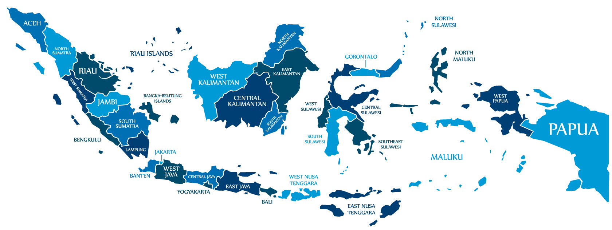

<ion-header>
  <ion-toolbar>
    <ion-title>Discover Region</ion-title>
    <ion-buttons slot="start">
      <ion-menu-button autoHide="false" style="color: black;"></ion-menu-button>
    </ion-buttons>
  </ion-toolbar>
</ion-header>
<ion-content fullscreen>
  <div class="photo-thumbnail">
    <pinch-zoom>
      
      

      <ion-icon id="pin1" name="pin" color="danger" (click)="presentPopoverAceh()"></ion-icon>
      <ion-icon id="pin2" name="pin" color="danger" (click)="presentPopoverBali()"></ion-icon>
      <ion-icon id="pin3" name="pin" color="danger" (click)="presentPopoverBengkaBelitung()"></ion-icon>
      <ion-icon id="pin4" name="pin" color="danger" (click)="presentPopoverBanten()"></ion-icon>
      <ion-icon id="pin5" name="pin" color="danger" (click)="presentPopoverBengkulu()"></ion-icon>
      <ion-icon id="pin6" name="pin" color="danger" (click)="presentPopoverGorontalo()"></ion-icon>
      <ion-icon id="pin7" name="pin" color="danger" (click)="presentPopoverJabar()"></ion-icon>
      <ion-icon id="pin8" name="pin" color="danger" (click)="presentPopoverJakarta()"></ion-icon>
      <ion-icon id="pin9" name="pin" color="danger" (click)="presentPopoverJambi()"></ion-icon>
      <ion-icon id="pin10" name="pin" color="danger" (click)="presentPopoverJateng()"></ion-icon>
      <ion-icon id="pin11" name="pin" color="danger" (click)="presentPopoverJatim()"></ion-icon>
      <ion-icon id="pin12" name="pin" color="danger" (click)="presentPopoverKalbar()"></ion-icon>
      <ion-icon id="pin13" name="pin" color="danger" (click)="presentPopoverKalimantanTimur()"></ion-icon>
      <ion-icon id="pin14" name="pin" color="danger" (click)="presentPopoverKalimantanUtara()"></ion-icon>
      <ion-icon id="pin15" name="pin" color="danger" (click)="presentPopoverKalsel()"></ion-icon>
      <ion-icon id="pin16" name="pin" color="danger" (click)="presentPopoverKalteng()"></ion-icon>
      <ion-icon id="pin17" name="pin" color="danger" (click)="presentPopoverKepri()"></ion-icon>
      <ion-icon id="pin18" name="pin" color="danger" (click)="presentPopoverLampung()"></ion-icon>
      <ion-icon id="pin19" name="pin" color="danger" (click)="presentPopoverMaluku()"></ion-icon>
      <ion-icon id="pin20" name="pin" color="danger" (click)="presentPopoverMalut()"></ion-icon>
      <ion-icon id="pin21" name="pin" color="danger" (click)="presentPopoverNusaTenggaraBarat()"></ion-icon>
      <ion-icon id="pin22" name="pin" color="danger" (click)="presentPopoverNusaTenggaraTimur()"></ion-icon>
      <ion-icon id="pin23" name="pin" color="danger" (click)="presentPopoverPabar()"></ion-icon>
      <ion-icon id="pin24" name="pin" color="danger" (click)="presentPopoverPapua()"></ion-icon>
      <ion-icon id="pin25" name="pin" color="danger" (click)="presentPopoverRiau()"></ion-icon>
      <ion-icon id="pin26" name="pin" color="danger" (click)="presentPopoverSulbar()"></ion-icon>
      <ion-icon id="pin27" name="pin" color="danger" (click)="presentPopoverSulsel()"></ion-icon>
      <ion-icon id="pin28" name="pin" color="danger" (click)="presentPopoverSulteng()"></ion-icon>
      <ion-icon id="pin29" name="pin" color="danger" (click)="presentPopoverSultra()"></ion-icon>
      <ion-icon id="pin30" name="pin" color="danger" (click)="presentPopoverSulut()"></ion-icon>
      <ion-icon id="pin31" name="pin" color="danger" (click)="presentPopoverSumbar()"></ion-icon>
      <ion-icon id="pin32" name="pin" color="danger" (click)="presentPopoverSumsel()"></ion-icon>
      <ion-icon id="pin33" name="pin" color="danger" (click)="presentPopoverSumut()"></ion-icon>
      <ion-icon id="pin34" name="pin" color="danger" (click)="presentPopoverYogyakarta()"></ion-icon>

    </pinch-zoom>
  </div>
</ion-content>